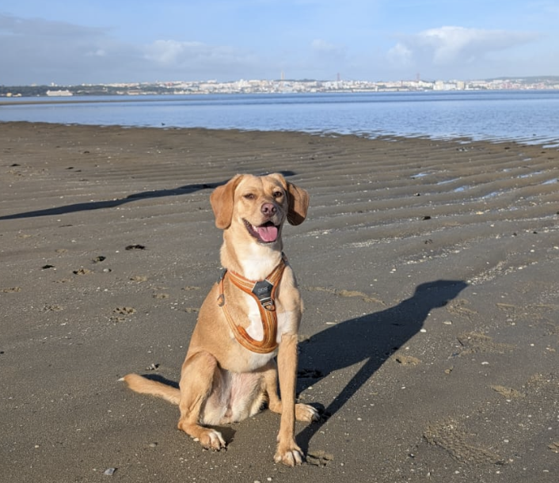

Moinho Novo started with a simple idea: remote work shouldn’t mean working alone.
After moving to Barreiro and working remotely ourselves, we realised how easy it is to feel disconnected from the place you live when most of the day happens behind a screen.
So we created Moinho Novo — a welcoming workspace where remote workers and freelancers can focus during the day while naturally meeting people and becoming part of the local community.
Barreiro has a proud industrial past and was once one of Portugal’s most important factory towns, home to the famous CUF complex. The name Moinho Novo reflects that history while looking forward to a new way of working. Our logo is inspired by the distinctive pavement pattern on Avenida Alfredo da Silva, one of the town’s most historic streets.
You’ll probably also meet our Chief Welcome Officer, Nala — a three-legged Portuguese rescue dog who now specialises in greeting people and supervising the workspace.
Drop by, we're excited to meet you.

Meet Nala — our Chief Welcome Officer.